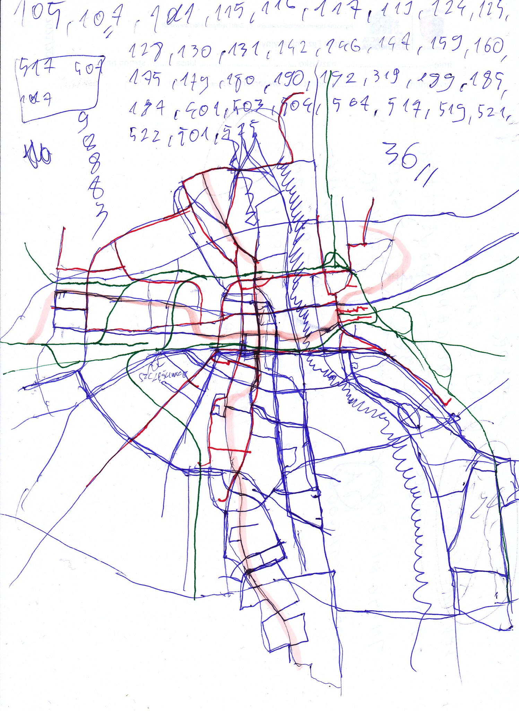

Spike. Why are you so small and weak? Haven't you read Jordan Peterson books I gave you for your birthsday? To become a man you need to clean your room and slay a dragon. You are a dragon, Spike. Grow up and kill yourself already
My Little Pony - Philosophical analysis
Published on: March 1, 2024 | Category: philosophyWarsaw public transportation tribute
Published on: July 1, 2023 | Category: travelingအထက်တန်းစား ဘားသခင်များသည် အမှိုက်ကွင်းကို လုယူကာ ရန်ဖြစ်ခဲ့ကြသည်။ သေခြင်းတရား၏ မှော်ပညာသည် ၎င်းတို့အား စည်းစိမ်ဥစ္စာများ ရရှိနိုင်စေမည်ဟု အချို့က ယုံကြည်ကြပြီး မှော်ပညာကို ဖျက်ဆီးပစ်ရန် ဆုံးဖြတ်ထားသူများနှင့် မှော်ပညာပိုင်သည့် ဂန္ထဝင် မစ္စတာ Szmoł ကို တစ်ဦးတည်းသာ လုပ်ဆောင်နိုင်သည်ဟု အချို့က ယုံကြည်ကြသည်။ ပရောဖက်ပြုချက်များသည် အမြဲအမှန်တကယ်ဖြစ်လာသည့် လူငယ်ပရောဖက်ပြုချက်တစ်ခုသည် အခကြေးငွေအနည်းငယ်ဖြင့် မစ္စတာ Szmołကို ရှာဖွေရမည့်နေရာကောင်းကို အရိပ်အမြွက်ပေးခဲ့သည်။ ဒါပေမယ့် သူတို့ Smol ကိုရလိုက်တဲ့အခါ Dust က မှော်အမှိုက်လက်စွပ်အကြောင်း ဘာမှမသိတဲ့အတွက် သူ့ကို အမွေဆက်ခံသူအဖြစ် သတ်မှတ်ခဲ့ကြပြီး အားလုံးလက်စွပ်ကို ရအောင်ယူခဲ့ရပါတယ်။ ထိုအချိန်တွင် ကံမကောင်းစွာဖြင့်၊ လူဆိုးများက လက်စွပ်ကို ခိုးယူကာ ထွက်ပြေးသွားကြသည်။ သို့သော်လည်း အဖွဲ့နှစ်ဖွဲ့လုံးက ၎င်းကို ပြန်လည်ရယူနိုင်ခဲ့ပြီး နောက်ဆုံးတိုက်ပွဲတွင် Mr. Rag သည် ယခု Mr. Makaroon အမည်ဖြင့် ထွက်ပေါ်လာခဲ့သည်။ သို့သော် မစ္စတာမာကာရွန်းသည် ဆိုးသွမ်းသူအဖြစ် အသွင်ပြောင်းကာ ၎င်း၏ မကောင်းသောအကြံအစည်များကို အကောင်အထည်ဖော်ရန် လက်စွပ်ကို ရယူလိုခဲ့သည်။ ကံမကောင်းစွာဖြင့်၊ လက်စွပ်ကို လူဆိုးများ ခိုးယူခံရပြီး တစ်ကြိမ်တစ်ခါမျှ ဖျက်ဆီးခံခဲ့ရသည်။ သို့သော် Mr. Makaroon သည် ဒေါသထွက်ပြီး လက်စားချေခြင်းဖြင့် Szmogils အားလုံးကို သတ်ခဲ့ပြီး အဓိကဇာတ်ကောင်များနှင့်အတူ မစ္စတာ Szmoł ၏ ဒုတိယနောက်ဆုံးတိုက်ပွဲကို စတင်ခဲ့သည်။ တိုက်ပွဲအတွင်း Podkarzmatnik သေဆုံးခဲ့သည်။ အဆုံး